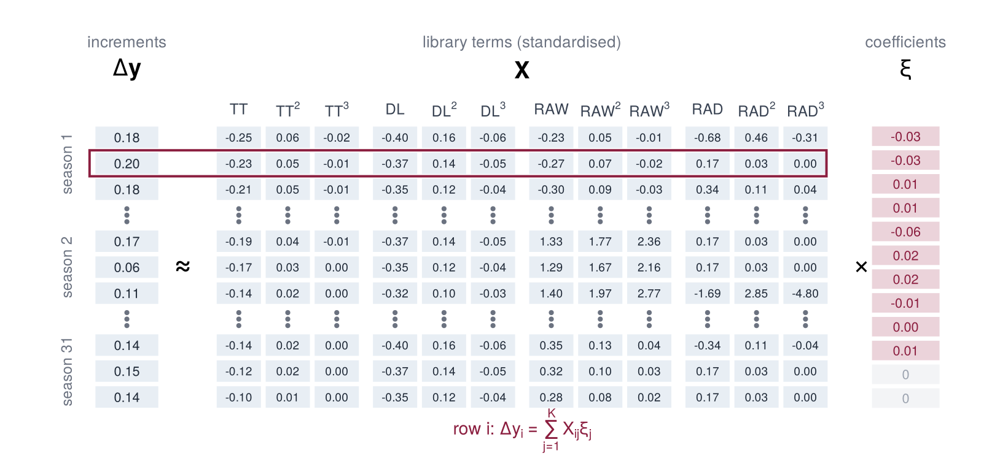

drv <- make_drivers(wx)
dim(drv$U)3 · Library and design matrix
wx <- read.csv("data/narrabri_weather.csv")
traj <- read.csv("data/narrabri_biomass.csv.gz")import matplotlib.pyplot as plt
import numpy as np
import pandas as pd
from dgxe import *
wx = pd.read_csv("data/narrabri_weather.csv")
traj = pd.read_csv("data/narrabri_biomass.csv.gz")Drivers
The library is built from all eight variables of step 2, Tmin, Tmax, Rain, RAD, VP, DL, TT and RAW, standardised to mean 0 and standard deviation 1. They are denoted \(u_1, \dots, u_8\). A subset can be chosen with the argument drivers of make_drivers. The response does not enter this step.
make_drivers <- function(wx, drivers = c("Tmin", "Tmax", "Rain", "RAD", "VP", "DL",
"TT", "RAW")) {
years <- sort(unique(wx$year))
das0 <- min(wx$das)
nd <- max(wx$das) - das0 + 1
U <- array(NA_real_, c(length(years), nd, length(drivers)),
dimnames = list(years, NULL, drivers))
for (j in seq_along(drivers)) {
i <- cbind(match(wx$year, years), wx$das - das0 + 1, j)
U[i] <- wx[[drivers[j]]]
}
# pad years that end early with their last value
for (y in seq_along(years)) {
for (j in seq_along(drivers)) {
u <- U[y, , j]
U[y, is.na(u), j] <- tail(u[!is.na(u)], 1)
}
}
center <- apply(U, 3, mean)
scale <- apply(U, 3, function(x) sqrt(mean((x - mean(x))^2)))
list(U = sweep(sweep(U, 3, center), 3, scale, "/"), years = years,
das0 = das0, drivers = drivers, center = center, scale = scale)
}def make_drivers(wx, drivers=DRIVERS):
years = np.sort(wx["year"].unique())
das0 = wx["das"].min()
U = np.full((len(years), wx["das"].max() - das0 + 1, len(drivers)), np.nan)
y = np.searchsorted(years, wx["year"])
U[y, (wx["das"] - das0).to_numpy(), :] = wx[drivers].to_numpy()
for s in range(len(years)): # years end on different days
for j in range(len(drivers)): # pad with the last value
u = U[s, :, j]
u[np.isnan(u)] = u[~np.isnan(u)][-1]
center = U.mean(axis=(0, 1))
scale = U.std(axis=(0, 1))
return SimpleNamespace(U=(U - center) / scale, years=years, das0=das0,
drivers=list(drivers), center=center, scale=scale)drv = make_drivers(wx)
print(drv.U.shape)[1] 31 150 8Library
Each driver enters through its first three powers, so that a response can be nonlinear, for example with an optimum. The library consists of
\[ \boldsymbol{\theta}(\mathbf{u}) = \bigl(u_1,\, u_1^2,\, u_1^3,\ \dots,\ u_8,\, u_8^2,\, u_8^3\bigr), \qquad K = 8 \times 3 = 24 \text{ terms}. \]
Together with the constant term \(\xi_0\) (the intercept of the regression), the equation to be identified is
\[ \frac{dy}{dt} \approx \xi_0 + \sum_{k=1}^{8} \bigl( \xi_{k1}\, u_k + \xi_{k2}\, u_k^2 + \xi_{k3}\, u_k^3 \bigr), \]
a cubic polynomial in each driver, added over the drivers. Sparsity means that most of these 25 coefficients are zero. The argument degree changes the powers, and pairs = TRUE adds products of pairs of drivers. Evaluating the library on every day of every year gives the array Theta[year, day, term]:
## Z: n x m matrix of standardised drivers -> n x K matrix of terms. Powers
## 1..degree of every driver; pairs = TRUE adds products of pairs of drivers.
## The constant term is the intercept of the regression and is not included.
library_matrix <- function(Z, degree = 3, pairs = FALSE) {
term <- function(x, p) if (p == 1) x else paste0(x, "^", p)
cols <- list()
for (d in colnames(Z)) {
for (p in 1:degree) cols[[term(d, p)]] <- Z[, d]^p
}
if (pairs) {
for (ij in combn(colnames(Z), 2, simplify = FALSE)) {
for (p in 1:2) {
for (q in 1:2) {
name <- paste0(term(ij[1], p), "*", term(ij[2], q))
cols[[name]] <- Z[, ij[1]]^p * Z[, ij[2]]^q
}
}
}
}
do.call(cbind, cols)
}
## Theta[year, day, term]
make_library <- function(drv, degree = 3, pairs = FALSE) {
d <- dim(drv$U)
Z <- matrix(drv$U, ncol = d[3], dimnames = list(NULL, drv$drivers))
L <- library_matrix(Z, degree, pairs)
array(L, c(d[1:2], ncol(L)), dimnames = list(NULL, NULL, colnames(L)))
}# Z: n x m matrix of standardised drivers -> n x K matrix of terms. Powers
# 1..degree of every driver; pairs = True adds products of pairs of drivers.
# The constant term is the intercept of the regression and is not included.
def library_matrix(Z, names, degree=3, pairs=False):
def term(x, p):
return x if p == 1 else f"{x}^{p}"
cols = {}
for j, d in enumerate(names):
for p in range(1, degree + 1):
cols[term(d, p)] = Z[:, j] ** p
if pairs:
for i, j in combinations(range(len(names)), 2):
for p in (1, 2):
for q in (1, 2):
name = f"{term(names[i], p)}*{term(names[j], q)}"
cols[name] = Z[:, i] ** p * Z[:, j] ** q
return np.column_stack(list(cols.values())), list(cols)
# Theta[year, day, term]
def make_library(drv, degree=3, pairs=False):
n_year, n_day, n_driver = drv.U.shape
Z = drv.U.reshape(-1, n_driver)
L, terms = library_matrix(Z, drv.drivers, degree, pairs)
return SimpleNamespace(array=L.reshape(n_year, n_day, -1), terms=terms)Theta <- make_library(drv)
dim(Theta)
dimnames(Theta)[[3]]Theta = make_library(drv)
print(Theta.array.shape)
print(Theta.terms)[1] 31 150 24 [1] "Tmin" "Tmin^2" "Tmin^3" "Tmax" "Tmax^2" "Tmax^3" "Rain" "Rain^2"
[9] "Rain^3" "RAD" "RAD^2" "RAD^3" "VP" "VP^2" "VP^3" "DL"
[17] "DL^2" "DL^3" "TT" "TT^2" "TT^3" "RAW" "RAW^2" "RAW^3" Response
The biomass trajectories are stored in an array Y[genotype, year, day] with NA after maturity.
## nend[g, y] is the number of daily steps of trajectory (g, y).
make_trajectories <- function(traj, drv, var = "biomass") {
gen <- sort(unique(traj$genotype))
Y <- array(NA_real_, c(length(gen), length(drv$years), dim(drv$U)[2]),
dimnames = list(gen, drv$years, NULL))
i <- cbind(match(traj$genotype, gen), match(traj$year, drv$years),
traj$das - drv$das0 + 1)
Y[i] <- traj[[var]]
nend <- apply(Y, c(1, 2), function(v) sum(!is.na(v)) - 1)
list(Y = Y, nend = nend, genotypes = gen, years = drv$years,
das0 = drv$das0)
}# nend[g, s] is the number of daily steps of trajectory (g, s).
def make_trajectories(traj, drv, var="biomass"):
genotypes = np.sort(traj["genotype"].unique())
Y = np.full((len(genotypes), len(drv.years), drv.U.shape[1]), np.nan)
g = np.searchsorted(genotypes, traj["genotype"])
s = np.searchsorted(drv.years, traj["year"])
Y[g, s, traj["das"] - drv.das0] = traj[var]
return SimpleNamespace(Y=Y, nend=(~np.isnan(Y)).sum(axis=2) - 1,
genotypes=genotypes, years=drv.years,
das0=drv.das0)tr <- make_trajectories(traj, drv)
dim(tr$Y)tr = make_trajectories(traj, drv)
print(tr.Y.shape)[1] 199 31 150Design matrix
For one genotype, the rows of \(\mathbf{X}\) are the days of all years (all except the first record of each year) and the columns are the library terms. Biomass is recorded at the end of a day, so the weather of day \(i\) drives the change from observation \(i-1\) to \(i\). The vector \(\dot{\mathbf{y}}\) holds the growth rate in the middle of each day, estimated as in step 1 by the one-day difference (numpy.diff in Python, diff in R),
\[ \dot y_i = \frac{dy}{dt}(t_{i-1/2}) = \frac{y_i - y_{i-1}}{\Delta t} + \mathcal{O}(\Delta t^2), \]
and row \(i\) of \(\mathbf{X}\) is the library of day \(i\).

g114 as a table: three days from the middle of each of the years 1, 2 and 31. The highlighted row is one equation, \(\dot y_i = \sum_j X_{ij}\xi_j\). The columns of \(\mathbf{X}\) are standardised; the coefficients \(\boldsymbol{\xi}\) are unknown and are estimated in step 4.## Rows: days 2, ..., n + 1 of every year (all days with a record before them).
## Biomass is recorded at the end of a day, so day i drives the change from
## observation i - 1 to i. dy: the difference over that day, y_i - y_(i-1), the
## growth rate at the middle of day i (centered difference with a half-day
## step). X: library of day i.
make_design <- function(Theta, tr, genotype) {
g <- match(genotype, tr$genotypes)
n <- tr$nend[g, ]
years <- seq_along(tr$years)
X <- lapply(years, function(y) Theta[y, 2:(n[y] + 1), ])
dy <- lapply(years, function(y) diff(tr$Y[g, y, 1:(n[y] + 1)]))
X <- do.call(rbind, X)
colnames(X) <- dimnames(Theta)[[3]]
list(X = X, dy = unlist(dy), year = rep(years, n))
}# Rows: days 2, ..., n + 1 of every year (all days with a record before them).
# Biomass is recorded at the end of a day, so day i drives the change from
# observation i - 1 to i. dy: the difference over that day, y_i - y_(i-1), the
# growth rate at the middle of day i (centered difference with a half-day
# step). X: library of day i.
def make_design(Theta, tr, genotype):
g = list(tr.genotypes).index(genotype)
n = tr.nend[g]
years = range(len(tr.years))
A = Theta.array
X = np.vstack([A[s, 1:n[s] + 1, :] for s in years])
dy = np.concatenate([np.diff(tr.Y[g, s, :n[s] + 1]) for s in years])
year = np.repeat(np.arange(len(tr.years)), n)
return SimpleNamespace(X=X, dy=dy, year=year, terms=Theta.terms)d <- make_design(Theta, tr, "g114")
dim(d$X)
round(head(d$X, 3), 2)
head(d$dy)d = make_design(Theta, tr, "g114")
print(d.X.shape)
print(d.X[:3].round(2))
print(d.dy[:6])[1] 4282 24 Tmin Tmin^2 Tmin^3 Tmax Tmax^2 Tmax^3 Rain Rain^2 Rain^3 RAD RAD^2
[1,] -0.65 0.42 -0.27 -1.30 1.69 -2.21 -0.26 0.07 -0.02 -0.84 0.71
[2,] -0.10 0.01 0.00 -1.20 1.43 -1.72 -0.26 0.07 -0.02 -0.51 0.26
[3,] -0.65 0.42 -0.27 -0.78 0.61 -0.47 -0.26 0.07 -0.02 -0.34 0.11
RAD^3 VP VP^2 VP^3 DL DL^2 DL^3 TT TT^2 TT^3 RAW RAW^2 RAW^3
[1,] -0.60 -0.12 0.01 0 -0.96 0.92 -0.89 -1.56 2.45 -3.83 0.83 0.69 0.58
[2,] -0.13 -0.12 0.01 0 -0.97 0.95 -0.92 -1.55 2.39 -3.69 0.81 0.65 0.53
[3,] -0.04 -0.12 0.01 0 -0.98 0.97 -0.95 -1.53 2.33 -3.56 0.78 0.61 0.48[1] 0.0023 0.0033 0.0040 0.0045 0.0048 0.0054